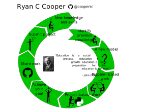

Teaching Philosophy#
Introduction#
I frame learning as a journey with the student as the central figure. The student’s journey includes recognizing their own strengths and appreciating the background and experiences that they bring to the classroom. In the student-centered classroom, diversity fosters creativity, collaboration, and understanding. I use my role as mentor and educator to amplify voices of the minority in the classroom. Specifically, I create a platform for students to build projects that draw from their own backgrounds and create passion.
The crucial element to learning new information is the journey that the student takes. The learning journey starts by recognizing what knowledge and background they already possess. Then, a new model is introduced that might challenge previous biases or views. From here, the student can either reframe their previous knowledge to incorporate this new model or start to challenge themselves to build something new and share it with others.
“Education is a social process. Education is growth. Education is, not a preparation of life; education is life.” - John Dewey
The social process is a journey that forces the student to confront their own strengths and understanding of the world. They have to communicate new knowledge and grow in order to truly learn.
Teaching philosophy in practice#

I modeled the learning journey after Campbell’s Hero’s Journey.
I start by having students identify themselves and their previous knowledge. This is where we agree to how the class will run and we edit the syllabus together. Then, I introduce the new model. The model could come in the form of equations, an observation, or computational work. I build my assignments using problem- and project-based learning approach.
Problem-based learning is defined here as giving students all the necessary tools and resources to answer a specific question. For example, a good problem-based assignment would introduce the Student t-test with an example and formulas explained, then ask students to determine if two sets of data have statistically significant differences in the mean. The goal in these assignments is to encourage communication and collaboration between students+TAs+professor.
After completing a series of problem-based assignments, students are given a more open-ended project-based assignment.
Project-based learning is defined here as giving students a more open-ended assignment that draws from multiple classroom experiences. My courses have varying levels of open-ended project examples, the least open-ended would include a very specific goal, e.g. make a model of firework, but its up to the individual to choose how and what to report. The most open-ended projects ask students to apply Newton’s laws to your career where the goal is to let students build an application that is important to them.
The completion of the open-ended project is a big achievement in the course, but the hard work is to communicate and share this work with other people. In the figure above, I give the example of GitHub, but this could also take the form of sharing Jupyter notebooks, building a powerpoint, or recording a video, etc. The fundamental key is to get students to transform this achievement into something more than a number or figure, ideally something they will use in a portfolio or personal website.
Once the student has completed this cycle, they enter the next stage with new knowledge and new skills. I design my courses to cover engineering applications and models, but students leave the course with communication, programming, problem-solving, and other technical skills that helped them complete and communicate their results.
Conclusion#
My teaching philosophy is a combination of Dewey’s and Campbell’s works. I build a student-centered experiential learning environment. The experience must be student-centered because the learning journey is an individual experience that is strengthened by classroom bonds and communication. As the instructor, I provide the goals, resources, and mentoring for the students.